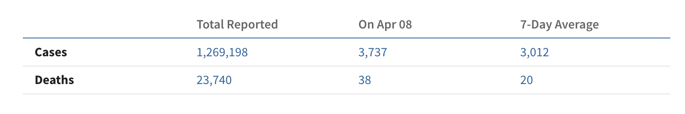
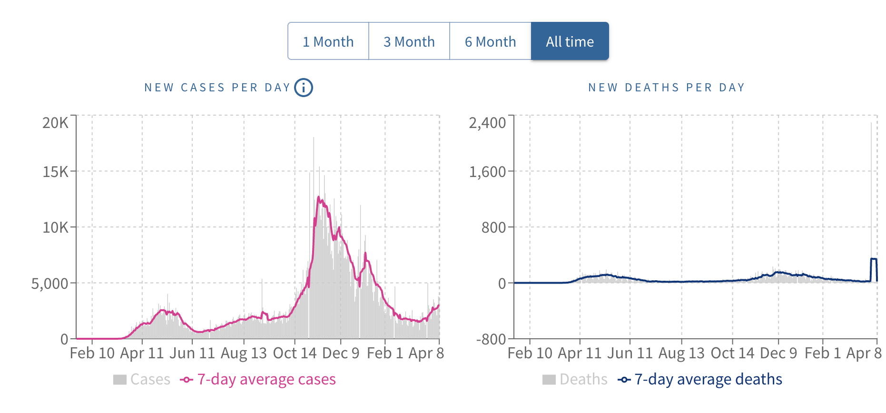
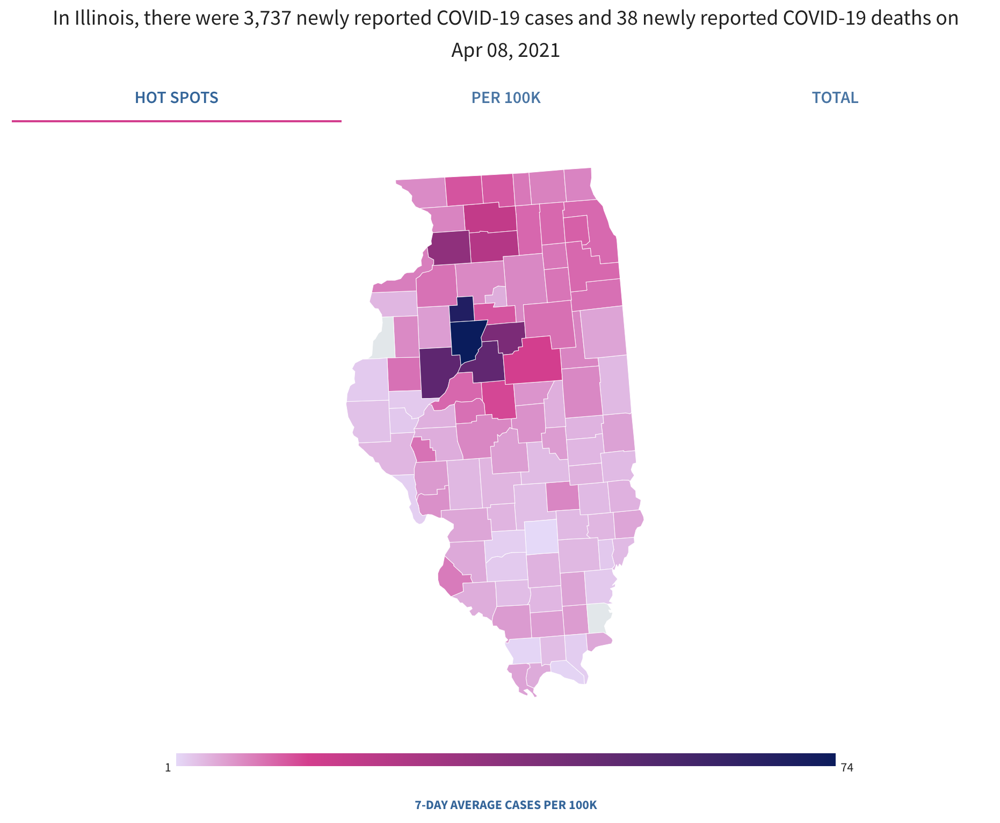
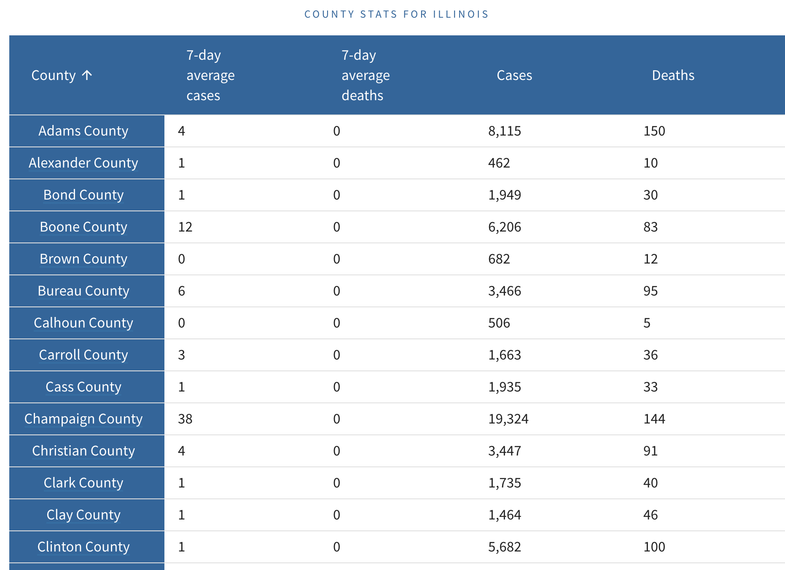
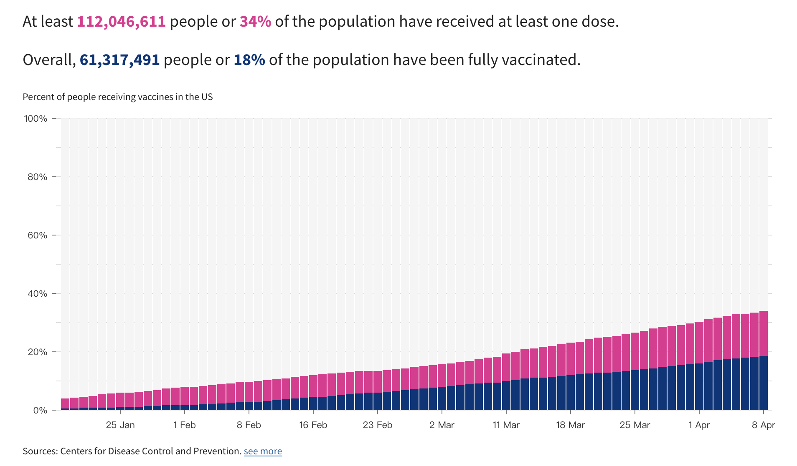
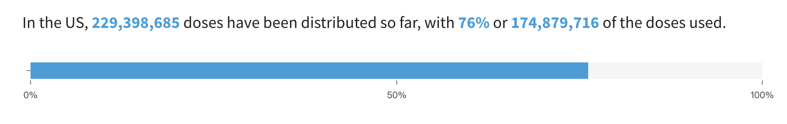
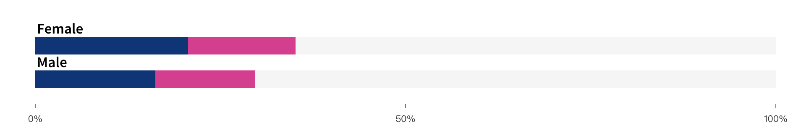
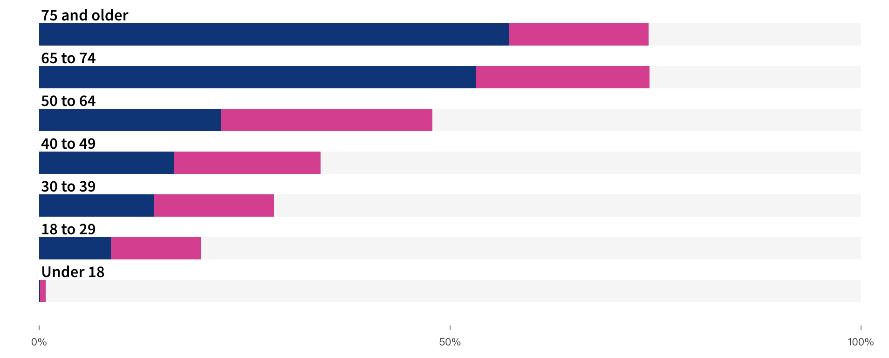
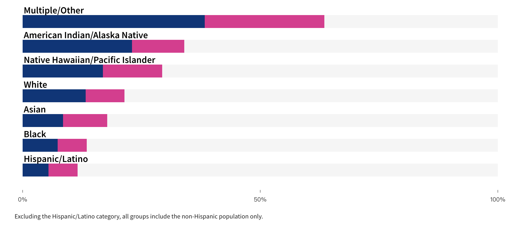
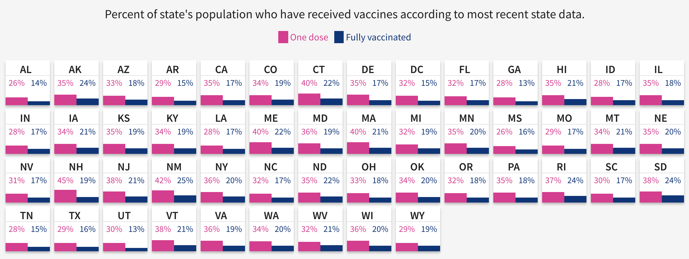

Student's Choice Presentation

What is its purpose?
This app helps users stay current on the state of the pandemic with daily metrics on vaccine distribution, coronavirus case counts by state and county, plus how the government is spending to boost the economy.
It also provides some facts and articles that will help the public to track the epidemic
This interactive feature aggregates data from the Centers for Disease Control and Prevention (CDC), state- and local-level public health agencies. County-level data is confirmed by referencing state and local agencies directly. Cases, deaths, and per capita adjustments reflect cumulative totals since January 22, 2020.
For most states, USAFacts directly collects the daily county-level cumulative totals of positive cases and deaths from a table, dashboard, or PDF on the state public health website. This data is compiled either through scraping or manual entry.
Because of the frequency with which we are currently updating this data, they may not reflect the exact numbers reported state and local government organizations or the news media. Numbers may also fluctuate as agencies update their own data.
Unique statesCalifornia and Texas state public health websites do not currently offer accurate county-level statistics. Instead, USAFacts individually pulls the most current numbers from each county’s public health website (58 counties for California and 254 counties for Texas).
Rhode Island’s public health website reports by town rather than the county, and we currently roll this up into counties. Rhode Island also doesn't report towns or counties with respect to its deaths, however, the state does periodically provide data on deaths in nursing homes, providing the location for those.
The Kansas state public health agency updates its data on Mondays, Wednesdays, and Fridays. The case and death counts for Kansas counties are compiled by consulting both the state data and county public health agency data, where available. If the two sources are not reporting the same values, the higher value is recorded.
Utah’s state government groups 22 of the state's 29 counties into one of six regional health agencies. Data for these individual counties is compiled from the six regional agencies.
Idaho's state health agency does not update its data on Sundays.
Cases not attributed to specific countiesThe 21 cases confirmed on the Grand Princess cruise ship on March 5 and 6 are attributed to the state of California, but not to any counties.
Some cases counted at the state level are not allocated to counties due to lack of information.
Counting cases and deathsUSAFacts currently counts presumptive positive cases as confirmed cases, as this is in line with how the CDC reports data. USAFacts assign cases to where the person was diagnosed as that information becomes available.
USAFacts takes deaths directly from state and local agencies. Per official CDC reporting guidelines, deaths should only be counted as COVID-19-related if the disease played a significant role in causing death. If a state reports both the location of death and the location of residency, we attribute the death to the location of residency.
TimingUSAFacts mostly collect data in the evening (Pacific Time). USAFacts generally update the data on their website by 9am PST.
Who are the users that this visualization was made for?The visualization was mainly made for U.S. residents who seek to follow the state of the pandemic with daily metrics on vaccine distribution, coronavirus case counts by state and county and how the government responds.
What questions do people want to ask?
After selecting the state in the upper left corner, users can select different tabs to display the information they want to obtain.

Tab - CASES AND DEATHS
The table shows the number of cases and deaths in a given state.

The bar charts show the curve and trend of the number of cases or deaths in a given time range.

The choropleth map shows severity in different states and counties.

Final with a raw data table shows cases and deaths in different counties.

Tab - VACCINATION PROGRESS
The proportion of the population who have received at least one dose in pink, and the proportion of the population who have been fully vaccinated.

Dose ratio: used divided by distributed.

COVID-19 vaccinations differ by sex.

COVID-19 vaccinations differ by age range.

COVID-19 vaccinations differ by race or ethnic group.

Comparison of states' vaccination progress.

Introduction video